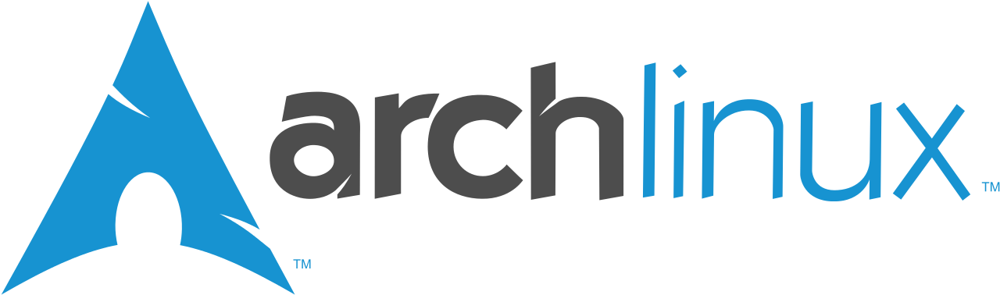

始めよう、Arch Linux
はじめに
皆さんのパソコンでは、何の OS が動いているでしょうか?
恐らく、ほとんどの人が Windows と答えるでしょう。あるいは macOS ユーザーも居るかもしれません。いずれにせよ、GNU/Linux ディストリビューション (いわゆる “Linux” と呼ばれるもの) をデスクトップ用途における主力 OS として使用している人は、この部誌が主に対象とする読者層においてもなおひと握りであろうと思われます。
本記事では、そんな GNU/Linux ディストリビューションの 1 つである “{Arch Linux|アーチ リナックス}” (/ɑːrtʃ ˈliːnʊks/) にスポットライトを当てて、その魅力をお伝えしたいと思います。
{width=160}
Arch Linux を Arch Linux 足らしめている要素とはなんでしょうか? 私が思う Arch Linux の特徴を以下に書き出してみます。
シンプルであること
KISS 原則という言葉があります。これは Keep It Simple, Stupid の略で、雑に意訳すれば「シンプルにしておけ、この間抜け」といった意味合いの言葉です。プログラミングの世界ではしばしば引き合いに出されるこの言葉は、Arch Linux においても、その一番の特徴であると断言できるほどに非常に強く意識されています。
例えば、Arch Linux にはデスクトップ 環境が同梱されていません。GUI を使いたければインストール時に自分でデスクトップ環境をインストールする必要があります。
「いやいや、デスクトップ環境は誰だって必要だろう」
そう思った方もいるかもしれません。しかし、GNOME、KDE Plasma、Cinnamon といった風に群雄割拠するデスクトップ環境の中からどれか 1 つを押し付けることはユーザーにとって不利益になる可能性があります。また、ssh して使うサーバーを作りたいだけだからデスクトップ環境は要らないというケースも十分にあり得ます。Ubuntu においては、このようなニーズはデスクトップ環境を差し替えた派生 OS や Ubuntu Server といったディストリビューションによってカバーされます。しかし、もとよりデスクトップ環境を同梱せずユーザーの選択に委ねるという形の “シンプルさ” を選択した Arch Linux は、たった 1 つのエディションでそれら全てのニーズをカバーできるのです。それが、Arch Linux の目指す “シンプルであること” なのです。
そのシンプルさ故に、Arch Linux は玄人向けのディストリビューションであると説明されることがあります。しかし、それは全くの間違いです。Arch Linux に Ubuntu に見られるようなデスクトップ環境、GUI ツール、そして様々な自動化が無いことは、決して対象ユーザーが上級者に限られることを意味しません。なぜなら、Arch Linux には他のディストリビューションに類を見ない素晴らしい Wiki が存在するからです。
充実した Wiki の存在
ArchWiki (https://wiki.archlinux.jp/) は、Arch Linux そのものと並んで Arch Linux コミュニティの価値の中核を担う、非常に重要な存在です。ArchWiki には、Arch Linux のインストールからリポジトリに収録されたパッケージの利用方法まで、ありとあらゆる情報が集約された Wiki です。Arch Linux に GUI ツールや自動化がデフォルトで付属しない代わりに、この Wiki を読むことで大抵の問題は解決するようにできています。
また ArchWiki に書いてあることは他の GNU/Linux ディストリビューションでも共通する内容が多く、全ての Linux ユーザーにとって価値ある資料です。
最新であること
Arch Linux では、ローリングリリースと呼ばれるリリースモデルを採用しています。これは、(Windows 11 とか Ubuntu 21.04 といった) ナンバリングをせずに、持続的に最新のパッケージを提供し続けるモデルです。なので Arch Linux にバージョン番号はありません。年に n 度の大規模アップデートといったものすらなく、日々パッケージを pacman (パッケージマネージャ) から更新していれば常に最新の環境を利用できます。新しいもの好きの人にとってこれほど愉快なことはありません。ほぼいつでも最新バージョンのアプリケーションが使えるのですから。
AUR による無限の拡張性
Ubuntu などのディストリビューションを使っていて、リポジトリに収録されていないソフトウェアが必要になったことはありませんか? そういった時、大抵は PPA (Personal Package Archive) を apt に追加してインストールしたり、あるいは手動で実行ファイルをダウンロードして配置するとか、ソースコードからビルドするといった手段を取ることになります。
しかし、Arch Linux においてはそのような悩みとは永遠に決別できます。Arch Linux には AUR (Arch User Repository) という、本流のリポジトリとは別の、コミュニティベースの (誰でもパッケージを追加できる) リポジトリがあります。AUR ヘルパーと呼ばれるソフトウェアを用いることで、この AUR に収録されている膨大な数のパッケージを本流のリポジトリからパッケージをインストールするのと同じように簡単にインストールできるようになります。これによって、Arch Linux は公式リポジトリのみでは到底カバーできないような無限の拡張性を得られるのです。
余談: Windows と比べた時のメリット
ここまでは Arch Linux と他の GNU/Linux ディストリビューションとの比較でしたが、Windows と比べた時のメリットについても少し述べさせていただきます。
安定感
先述の Arch Linux のシンプルさとも繋がりますが、Arch Linux が基本的にシステムの様々な部分を隠蔽せずにユーザーが直接設定することを志向していることとは対照的に、Windows は多くの設定を GUI 経由で行うことを前提として設計されており、その実体が隠蔽されていて扱いにくい側面があります。しかし他方でコマンドプロンプトからの操作を必要とする設定や、複数のパラメーターに同時に作用する設定があり、これらは得てして設定の不整合に繋がりがちです。
また、Windows は NTFS の設計の都合上、特にファイルのメタデータへアクセスする際のパフォーマンスが悪く、大量のファイルが収容されているフォルダを開くなどの操作をした際にシェル (explorer.exe) やシステム全体が顕著に不安定になります。これに対して GNU/Linux において主に使われる ext4 や btrfs といったファイルシステムは比較的 I/O パフォーマンスに優れており、このような問題が発生する頻度は低いです。
パッケージ管理の楽さ
最近の Windows では winget というパッケージマネージャが使えるようになったことで以前と比べれば状況は改善しているものの、それでもインストーラーを基本とした Windows の伝統的なバラバラのパッケージ管理は残っています。この点において Windows が Linux に対して優位に立つことは絶対に無いでしょう。
高いカスタマイズ性
Windows にはカスタマイズ不可能な部分が多くあります。システムフォントやウィンドウを操作した時の挙動はさることながら、エディションによっては運用の根幹に関わる Windows Update の可否すら自由に決められません。GNU/Linux ディストリビューションではこのようなことは一切なく、ユーザーが望むのであれば (デスクトップ環境にもよりますが) 見た目や挙動を非常に幅広くカスタマイズできますし、パッケージマネージャを明示的に操作しない限り勝手にアップデートのために再起動されることもありません。
このように、Arch Linux は Windows に対しても、他の GNU/Linux ディストリビューションに対しても、非常に優れた側面を持つディストリビューションなのです。
おわりに
ここまで拙文を読んでいただきありがとうございました。他の方の記事と比べると技術色はかなり薄くなってしまったかと思いますが、本記事を通じて 1 人でも Arch Linux やその他の GNU/Linux ディストリビューションに興味を持ってくれる人がいれば嬉しい限りです。
私が Arch Linux を知ったのは 2020 年でした。初めはインストールの段階からコマンドラインで操作する必要があるという硬派な雰囲気に怖気づいて手を出せずにいたのですが、それまで使っていた Ubuntu と Windows 10 Insider Preview にも飽きつつあったので思い切ってメイン PC にインストールしてみたのです。それからおよそ 2 年。途中で Windows 11 を入れたりもしましたが、やはり Arch Linux の快適さには敵わず、今も普段使いの OS として活躍しています。本記事では Arch Linux の素晴らしさについて語らせていただきましたが、これに私の主観が多分に含まれていることは疑いようがありません。ですから、ぜひ自分に合った OS を探してみてください。私にとっての Arch Linux のように、皆さんがそれぞれ “とりあえず Windows” ではない、本当に使いたいと思えるような運命の OS に出会えることを願っています。
最後に、PC 部のかねてよりの目標であった部誌の発行を実現し、また私にその記念すべき第 1 号への寄稿の機会を与えてくださった部長に敬意と感謝 (そして 3 度も締切を踏み倒したことへの謝意) を表明して、本記事の結びとさせていただきます。